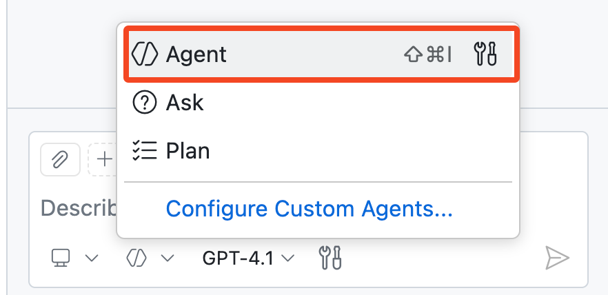

Our delivery model has five stages. Shared IDs tie them together, and each exercise focuses on part of the loop.
01
Intent
Why the change matters and what is out of scope.
Written inOpenSpec proposal
02
Requirement
A rule the system must follow, with its own ID.
Written inOpenSpec spec
03
Scenario
A concrete example of how the rule behaves.
Written inOpenSpec and Gherkin
04
Code
The smallest change that makes the scenarios pass.
Drafted byCopilot, reviewed by you
05
Evidence
Automated results that anyone can check.
Produced byCucumber and CI
GitHub Codespaces hosts the whole loop in one ready-made environment.
Shared IDs 001-FR-012001-US3-AS4
Why these tools
An opinionated toolkit
We chose these tools to keep a one-day workshop simple to run. They are one good combination, not the only one.
Plain text in Git
Specs, scenarios and code live in one repository and are reviewed in the same pull request.
Nothing to install
A codespace opens with Node.js, both command-line tools and the editor extensions ready.
Readable by all
Product owners, testers and developers can all read a proposal or a scenario.
A clear pass or fail
Strict validation and runnable scenarios show exactly what passed and what didn’t.
Swap any tool, keep the loop.Near the end, we’ll map each tool to alternatives that give the same result.
Tool 1 of 5
OpenSpec
An open-source spec layer that helps people and AI assistants agree on what to build before any code is written. Specs are Markdown files in your repository.
What it does
Keeps living specs in openspec/specs/: the current truth about the system
Proposes each change in its own folder, with a proposal, tasks and spec deltas
Checks the structure with openspec validate --strict
Archives a finished change and merges its deltas into the specs
Where teams use it
Changing existing systems: it is built for brownfield work, not just greenfield
Agreeing on scope with an AI assistant before it writes code; it works with more than 30 assistants
Reviewing requirement changes in pull requests, right next to the code
One folder holds why, how, what to do, and exactly which rules change.
openspec/exercise 3
specs/current truth
member-eligibility/
spec.md
changes/work in progress
implement-dependent-privacy/
proposal.mdwhy and scope
design.mdtechnical approach
tasks.mdsix checkboxes
specs/member-claim-privacy/
spec.mdthe delta
…/specs/member-claim-privacy/spec.mddelta
## ADDED Requirements
… 001-FR-011 and 001-FR-012 …
### Requirement: 001-FR-013
A direct lookup MUST return the same status and body for a hidden claim as for a claim that does not exist. Only callers marked as authenticated subscribers MAY list or look up a dependent’s claims.
#### Scenario: 001-US3-AS6
-GIVEN a subscriber who cannot see a 16-year-old dependent’s sensitive claim
-WHEN the subscriber looks up that claim and a claim ID that does not exist
-THEN both responses have status 404 and the same body
ADDED · MODIFIED · REMOVED · RENAMEDEvery requirement says SHALL or MUSTEvery requirement has a scenario
OpenSpec · The command line
Validate, list, archive
Strict validationpass
$npm run validate:spec
change/implement-dependent-privacy
spec/member-eligibility
Totals: 2 passed, 0 failed (2 items)
After deleting MUST from 001-FR-013fail
$npm run validate:spec
change/implement-dependent-privacy
[WARNING] member-claim-privacy/spec.md: ADDED "001-FR-013" should contain SHALL or MUST (RFC 2119 best practice for English specs)
It gives back the first hour of every workshop: the one usually spent installing things.
Ready in minutes
No local installs and no version conflicts. Everyone starts from the same setup.
Any laptop
A browser is enough. Nothing needs to be installed on your machine.
Versioned setup
The environment lives with the exercise, so the tools always match the instructions.
Free monthly quota
120 core hours on GitHub Free, 180 on Pro: about 60 hours on a 2-core machine with Free.
Stops after 30 minutes without activity, by default
Delete codespaces you’re done with: stopped ones still use storage
Prefer your machine? Open the repository in a dev container in VS Code
Tool 5 of 5
GitHub Copilot
Your AI pair programmer. Today, Copilot Chat in the codespace drafts answers, plans and code, and you review every draft.
Ask
Answers questions about your files without changing them.
Exercise 2: look for rules an epic is missing
Agent
Plans the edits, changes files, runs commands such as tests, reads the results and tries again.
Exercise 3: plan and make an approved change

Choose a mode in the chat input. Open Chat with Ctrl+Alt+I, or Ctrl+Cmd+I on a Mac.
Copilot · Custom instructions
Teach Copilot the house rules
Instructions files are Markdown that Copilot adds to its context automatically. They guide Copilot; your review checks that it followed them.
.github/copilot-instructions.mdevery chat request
# Specification-driven development rules
…
Before coding:
… steps 1 to 3: read the change and the features, report conflicts …
4. Produce a plan mapping each scenario ID to code changes and automated tests.
5. Wait for a person to review and approve the plan.
During implementation:
…
- Never weaken, skip or delete a test merely to make it pass. If a test looks
wrong, stop and explain why instead of changing it.
gherkin.instructions.md*.feature only
---
applyTo: "**/*.feature"
---
Use declarative, business-readable scenarios. Keep UI selectors, transport details, database structure, and implementation technology out of Gherkin unless they are part of the externally observable contract.
Not only Copilot.Many assistants, Copilot included, also read an AGENTS.md file for the same purpose.
The rule of the day
AI drafts. Humans decide.
The loop has four human gates. Copilot can prepare everything up to a gate, but only a person can open it.
1A person
Ready to build
Questions answered, capabilities confirmed, test data ready. A person says ready or names the blockers.
Exercises 3 and 4
2A person
Plan approved
Copilot’s plan is read and approved before it writes code or tests.
Exercise 3 · step 1
3A person
Diff reviewed
Every changed line and every test result is read, not skimmed.
Exercise 3 · step 2
4A person
Merge approved
On a team, another person approves the pull request. Here, you practice the merge.
Exercise 3 · step 5
Fictional data only.Never put real member data, secrets or production identifiers into a prompt, a fixture or a log.
The workshop · How exercises work
Every exercise is a GitHub Skills course
Mona, the Octocat who runs GitHub Skills, guides you through comments in an issue. Everything runs on GitHub Actions in your own copy.
1
Copy the exercise
Select Copy Exercise and create your own repository.
2
Open the issue
After about 20 seconds, refresh: Mona has opened an issue with step 1.
3
Read the step
Each step explains one idea and gives you a short activity.
4
Do the activity
Work in your codespace, then commit, push or open a pull request.
5
Mona replies
Actions checks your work; Mona posts feedback or the next step.
Repeat for every step
Keep the issue tab open.If Mona is quiet after a minute, refresh, then check the Actions tab. If a run failed, ask a helper.
The workshop · Your path
Four exercises, one loop
IntentRequirementScenarioCodeEvidenceNot in focus
135 min
Trace the Loop from Intent to Evidence
Follow one business rule from intent to passing evidence, and find what green tests do not prove.
OpenSpecGherkinCucumber
245 min
Find the Missing Rules Before You Build
Question a thin epic, then write the missing rules as a valid OpenSpec change.
OpenSpec
375 min
Deliver an Approved Behavior with Copilot
Go from failing tests to a merged, archived change, with a person at every gate.
OpenSpecGherkinCucumber
460 min
Draft Your First Spec
Frame an unfamiliar problem as a validated change, and decide whether it is ready to build.
OpenSpec
All four exercises run in GitHub Codespaces and use GitHub Copilot. Take them in order.
Beyond this workshop
Same method, other tools
Every job in the loop has alternatives. These are examples, not recommendations.
Job in the loop
In this workshop
Also works
Specs and requirements
OpenSpec
GitHub Spec Kit, or Markdown requirements with IDs and a review checklist
Executable examples
Gherkin + Cucumber.js
Cucumber-JVM, Reqnroll for .NET, Behave or pytest-bdd for Python, Behat for PHP
Environment
GitHub Codespaces
The same dev container on your machine with VS Code, or a scripted local setup
AI assistant
GitHub Copilot
Any assistant that follows repository instructions, such as an AGENTS.md file
Checks and automation
GitHub Actions
Any CI service that validates specs and runs the tests on every pull request
Beyond this workshop
What stays the same
Whatever tools you choose, these six habits are the method.
Intent before code
Agree on why, and on what is out of scope, first.
Rules have IDs
Every requirement and scenario can be referenced.
Examples illustrate rules
Each requirement has at least one concrete scenario.
The smallest change
Write only the code that the scenarios need.
Evidence, then judgment
Checks show what passed; people judge if it’s enough.